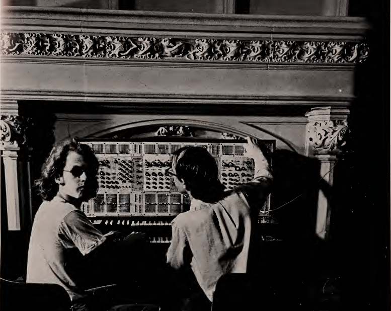

software + conceptual art
A Digital Computer has the wrong name to begin with. John von Neumann, at the very beginning (late forties), called it the All-Purpose Machine, and that was the right name, but it got mislaid somewhere. A digital computer is a device which can be programmed to move information [, they] can also count, and do arithmetic. But this numerical activity of computers has been vastly overemphasized. For it is their ability to vary and combine programs, test the outside world and modify it (through input and output), and handle the general diddling of vast quantities of information [...] that makes it, in some very important sense, the ultimate machine.
A computer language is usually a set of artificial words [...] which a programmer may combine by some set of rules into a long spell (a program). This spell is then given in some way to another program in the computer, the “language processor”, which turns the relatively few instructions in the computer language into the many ittybitty instructions needed by the computer itself. If the spell is properly cast, the system does what the programmer wants [...]
Ted Nelson
from "Computers are not what you think"
pg 66 in the "Software" exhibition catalogue 1970
The image above is from the cover of the exhibition catalog for "Software, Information Technology: Its New Meaning for Art" curated by Jack Burnham at the Jewish Museum in New York in 1970. You can view a pdf of the full program here (missing pages) or a color version here (includes all the pages, some are nsfw) it's definitely worth a look through.

The show drew connections and arranged collaborations between technologists and conceptual artists. For exmpale, pictured here are three members of the R.E.S.I.S.T.O.R.S. (Radically Emphatic Students Interested in Science, Technology and Other Research Studies) a rare/early "computer club" of middle and high school students with conceptual artist Agnes Denes. Pictured here are Peter Eichenberger, Lauren Sarno, John Levine (not present: Nat Kuhn).
The exhibition included early examples of the sorts of work we'll be creating in this class, visual algorithmic compositions, like "Matrix of Knowledge & Trigonal Ballet" featured above, as well as musical algorithmic compositions like "the Composer" by Allen Razdow and Paul Conly (Art & Technology, Inc, Boston) an early music synthesizer (the ARP) connected to an early computer (PDP-8) which was programmed to create random musical compositions the audience could "contribute ideas to" by "directly changing the computer program using electro-mechanical devices in front of four seats in the gallery".
The exhibition included algorithmic works with less conventional modes of output like the haptic feedback in Linda Berris's "Tactile Film", the "first motion picture created to be felt as well as seen and heard" designed to be played back through the Vision Subsituttion System (seen here from the front and from the back). For the purposes of our first assignment it might be worth looking little deeper into some of the exhibitions algorithmic text-based works. The exhibition included many text-based pieces including "Labyrinth", an interactive version of the exhibition catalogue by Ted Nelson, which was also one of the first "hypertext" systems to be created. Let's dive deeper into one of the text-based pieces, "The Boolean Image/Conceptual Typewriter"
Originally produced for the exhibition in 1970 by Carl Fernbach-Flarsheim, the piece is composed by a program called 'Conceptual Typewriter' which is used to generate random spatial outputs of letters and numbers. Here's a modern version I created on netnet based on another version created in processing by the poet and programmer Allison Parrish
the JavaScript "Date" Object
The conceptual artist On Kawara, whose Self-Observation series was mentioned in the video above, is likely best known for his "Today Series", also known as his "date paintings"...